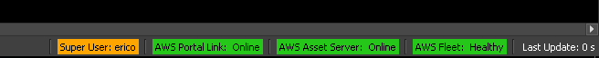
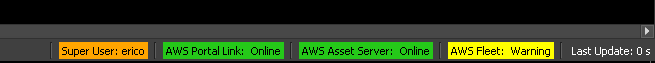
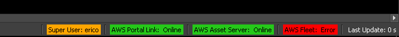
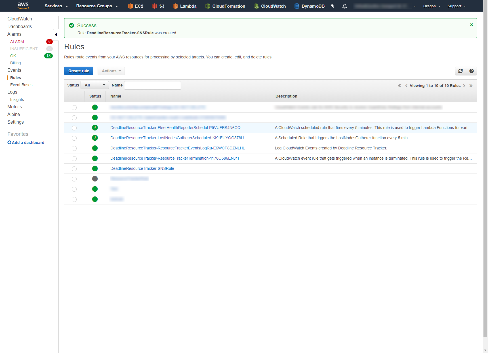

Resource Tracker Overview¶
Note
We strongly recommend setting up email notifications with the Resource Tracker. This will notify you when a Fleets status changes, allowing you to take any required actions. Email Notification Setup
Overview¶
Resource Tracker is a service that monitors the health of instances started by Deadline in your AWS account. It monitors a heartbeat reported by each render node running Deadline Worker and terminates instances that are failing Deadline health checks, helping you avoid extra costs. To prevent canceling your fleets unnecessarily, Resource Tracker allows for a low amount (5% by default) of instances to fail their health checks without affecting the Fleet. Resource Tracker also monitors the health of your Spot Fleet Requests, and when the amount of instances that fail their health checks exceeds the fleet termination threshold (20% by default), it cancels that Fleet and prevents new Fleet launches. You can adjust these thresholds to fit your needs. Once you have solved the underlying issue, you can then restore normal operation by following the instructions in the Notifications section below.
Resource Tracker Version¶
Starting from Deadline 10.0.10, Resource Tracker versioning was decoupled from Deadline versioning and the latest version of Resource Tracker will always be used.
To check your current Resource Tracker version, go to your AWS account, then to CloudFormation -> Stacks -> DeadlineResourceTracker, and in the Outputs tab you can see the version under ResourceTrackerVersion key.
Examples of Failure¶
Here are a few example scenarios where the Resource Tracker will intervene.
Deadline Worker Can’t Communicate to the Deadline Repository
When the Deadline Worker cannot connect to the Deadline Repository, the Resource Tracker will terminate the instance. That can happen if:
The Remote Connection Server isn’t running.
The instance hasn’t mounted the Repository network drive correctly.
The instance loses its network connection.
The Deadline Repository won’t Allow Incoming Connections
Situations can arise where the Deadline Repository won’t accept incoming connections to it. In that case, the instances won’t be able to connect to the repository and will be terminated. That can happen if:
The Repository loses network or internet connection (ex. power outage).
The Repository or Remote Connection Server machine shuts down.
AWS Portal Link is not running.
The Deadline Worker is Not Reporting its Health
When the Deadline Worker is not reporting its health information to the Resource Tracker, the instance will be terminated. That can happen if:
The instance doesn’t have the Deadline Worker installed.
The Deadline Worker crashes.
The Deadline Worker is older than version
10.0.27.
Starting the Resource Tracker¶
A Resource Tracker service is automatically started the first time you create an AWS Resource with a compatible version of the AWS Portal or the Spot Event Plugin. If you’re working in multiple AWS regions, one Resource Tracker will be created for each region.
For AWS Portal, the Resource Tracker will be launched prior to you creating a new infrastructure. If you already have a compatible infrastructure, the Resource Tracker will be launched when you create a new Spot Fleet Request.
The Spot Event Plugin will launch the Resource Tracker on House Cleaning.
Prerequisites¶
Before you can run the Resource Tracker, you must configure some resources in your AWS account:
You must update your IAM permissions.
For AWS Portal, update your AWSPortal IAM user to use our managed policies.
For the Spot Event Plugin, update your Spot Credentials and IAM Instance Role.
You must create a Resource Tracker IAM role.
For AWS Portal, this is done as part of the IAM resource creation step of the AWS Portal Server installer.
For the Spot Event Plugin, you must create the IAM role yourself. Learn more about how to create the Resource Tracker IAM Role.
For the Spot Event Plugin, if you’re operating in a private subnet with no IGW/NAT gateway, you will need to create VPC Endpoints.
Resource Tracker Identity and Access Management (IAM) Role¶
The Deadline Resource Tracker requires an IAM Role named “DeadlineResourceTrackerAccessRole” in order to access AWS resources in your account.
For AWS Portal, this role is created automatically as part of the AWS Portal Server installer’s IAM resource creation step.
For the Spot Event Plugin, you must create the role manually as described below.
This IAM role must have the following settings:
Trusted Entity: AWS Service: Lambda
Permissions policies: AWSThinkboxDeadlineResourceTrackerAccessPolicy (AWS managed IAM policy)
Role name: DeadlineResourceTrackerAccessRole
Creating the Resource Tracker IAM Role¶
To create the Resource Tracker IAM role:
Sign in to the AWS Console.
Click on Services at the top of the AWS Console, and then click on IAM under “Security, Identity and Compliance”.
On the “IAM” panel that appears, click Roles, and then click the Create Role button.

In the “Create role” panel that appears, choose the following:
Under Select type of trusted entity, choose AWS service.
Under Choose a use case, choose Lambda.
Click the Next: Permissions button to continue.

Search for AWSThinkboxDeadlineResourceTrackerAccessPolicy in the search box, and check it in the list below.
Click the Next: Tags button to continue.

You can add tags with additional data to the role, but they are not required.
Click the Next: Review button to continue.

In the Role name field, enter DeadlineResourceTrackerAccessRole.
Verify that the information is correct, and click Create role.
Compatibility¶
The Resource Tracker was released with version 10.0.27 of Deadline.
Warning
Be sure to upgrade ALL Deadline components to Deadline 10.0.27 or later to ensure that it will operate correctly.
Why is upgrading important?¶
The Resource Tracker may not function as expected if some components are not upgraded. This can result in:
Normal functioning instances being terminated.
Instances that are not functioning correctly not being terminated.
Spot Fleet Request and their Instances may not be monitored by the Resource Tracker.
Infrastructures failing to start.
Spot Event Plugin failing to start.
Upgrading AWS Portal¶
General instructions for upgrading Deadline components can be found here.
Stop AWS Portal Infrastructures
First, stop any running AWS Portal infrastructures. See here for details.
Repository
Next, upgrade the Deadline Repository. The Deadline Repository should be upgraded following the instructions found here.
Non-Workstations & Remote Connection Server
Next, upgrade non-render node and non-workstations. For AWS Portal, that means the Remote Connection Server and AWS Portal Link.
Instructions for the Remote Connection Server can be found here.
To upgrade the AWS Portal Link. Install the latest Deadline Client on the machine followed by the latest AWS Portal Link installer.
IAM Policy
The IAM Policy we recommend using for AWS Portal has been updated. Updating your current policy is required for the new features to work. Follow the instructions in Creating the AWSPortal IAM User.
Start AWS Portal Infrastructures
Start a new AWS Portal infrastructure. See Creating a Deadline AWS Portal Infrastructure for more details.
Custom AMI Render Nodes
If you’re using a custom AMI for your render nodes, you’ll need to upgrade the version of the Deadline Worker. You can follow the instructions for customizing an AMI here. NOTE: In this case, your base AMI will be the AMI that needs upgrading. Install the new Deadline Client on the machine and image the machine. Use the new image from now on.
Upgrading the Spot Event Plugin¶
If currently running, disable the Spot Event Plugin, stop Pulse and cancel any running Spot Fleet Requests that the Spot Event Plugin has made before upgrading anything.
General instructions for upgrading Deadline components can be found here.
Repository
Start by upgrading the Deadline Repository. The Deadline Repository should be upgraded following the instructions found here.
Non-Workstations
Next, upgrade non-render nodes and non-workstations. For the Spot Event Plugin, that means updating Pulse.
Instructions for Pulse can be found here.
IAM Policy
There are the new IAM Policies that are required for the Spot Event Plugin credentials and the Render Node IAM instance profile.
IAM Role
You must create an IAM role for the Resource Tracker to access resources in your AWS account. Learn more about how to create the Resource Tracker IAM Role.
VPC Endpoints
If one or more of your EC2 instances are running inside a private subnet in your VPC, then you will need to provide a mechanism for those instances to be able to access the AWS web service endpoints used in the above IAM policies. A VPC endpoint enables you to privately connect your VPC to supported AWS services and VPC endpoint services powered by PrivateLink without requiring an internet gateway, NAT device, VPN connection, or AWS Direct Connect connection.
Render Nodes
Update the Deadline Worker application on your custom AMI by starting a new instance of that AMI, connect to it and install the latest Deadline Client installer. Create a new AMI from the instance.
Spot Fleet Configuration
Once you have your new AMI created, you’ll need to make a new Spot Fleet configuration. Do not replace the AMI ids in your current configuration as that will result in errors. It’s best to create a new configuration. See How to make a Spot Fleet configuration. Finally, restart Pulse.
Notifications¶
The status of your instances is indicated by a status label in the Deadline Monitor.
Typically, a status of “Healthy” will be shown.
If the amount of instances not working properly is higher than the fault tolerance but lower than the termination threshold, the status will change to “Warning”. If a Spot Fleet Request remains in the “Warning” state after the grace period ends, it will be marked as “Error”.
If more than 20% of your instances are not functioning correctly, the status will change to “Error”. You can view which Spot Fleet Requests are in the “Error” state by double-clicking the label or by viewing the status label tooltip.
You will be unable to create new Spot Fleet Requests or change the target capacity of existing requests when in the “Error” state. When something has gone wrong, we want to avoid starting more instances. This prevents you from being charged for instances that aren’t behaving as intended.
Once you’ve resolved why your fleet(s) have errored you can manually reset the system. To do this, double-click on the status label. Enter your AWS Access Key and AWS Secret Key. Then click OK.

Custom CloudWatch Events¶
The Resource Tracker now generates CloudWatch Events when an instance is marked as Unhealthy or a Fleet’s health status changes. CloudWatch Events can be used automate specific actions or send out notifications when the health of your Fleets or Instances change. The Resource Tracker currently has three CloudWatch Events that it generates:
- Deadline Resource Tracker Lost Node Notification:
{ 'version': '0', 'id': '00000000-0000-0000-0000-00000000', 'detail-type': 'Deadline Resource Tracker Lost Node Notification', 'source': 'DeadlineResourceTracker.LostNodeReporter', 'account': '00000000000', 'time': '2019-10-21T15:34:54Z', 'region': '<aws_region_name>', 'resources': [], 'detail': { 'instance_id': 'i-0ooo00o00o0' } }
This event is fired whenever a render node Instance fails to publish its health information to the SQS Queue and is marked as “Unknown” for its health status.
- Deadline Resource Tracker Instance Unhealthy Notification:
{ 'version': '0', 'id': '00000000-0000-0000-0000-00000000', 'detail-type': 'Deadline Resource Tracker Instance Unhealthy Notification', 'source': 'DeadlineResourceTracker.InstanceHealthReporter', 'account': '00000000000', 'time': '2019-10-21T15:48:51Z', 'region': '<aws_region_name>', 'resources': [], 'detail': { 'instance_id': 'i-0sdfsdaffasdf' } }
This event is fired whenever a render node Instance is found to be in an unhealthy state.
- Deadline Resource Tracker Fleet Health State-Change Notification:
{ 'version': '0', 'id': '00000000-0000-0000-0000-00000000', 'detail-type': 'Deadline Resource Tracker Fleet Health State-Change Notification', 'source': 'DeadlineResourceTracker.FleetHealthReporter', 'account': '00000000000', 'time': '2019-10-21T15:35:07Z', 'region': '<aws_region_name>', 'resources': [], 'detail': { 'fleet_id': 'sfr-00oo00o-00o0-0o00-0000-00o00oo0o0o0', 'capacity': 3, 'activity_status': 'fulfilled', 'healthy_node_count': 0, 'unhealthy_node_count': 3, 'grace_period_start_time': '1970-01-01T00:00:00', 'status': 'Unhealthy-Fleet Terminated' } }
This event is fired whenever a Fleet’s health status changes.
You can learn more about CloudWatch Events from the AWS Documentation.
AWS SNS Email Notifications¶
It is possible to setup AWS Simple Notification Service (SNS) email notifications for Resource Tracker CloudWatch Events. This would allow you to receive an email whenever a Fleet’s health status changes so you could take action based on the health status.
- There are three steps for doing this:
Setup SNS Topic & Subscribe to it
- Subscribe to Topic
Now that you have your SNS Topic created, you need to subscribe an email address to it.
On your newly created SNS Topic’s page, make sure the Subscriptions tab is selected and click Create Subscription on the right hand side.
Leave the first field, Topic ARN, as the default value and under the Protocol drop down menu, select Email.
In the Endpoint field, enter in the email address you want notifications to go to.
Click Create Subscription. This will send a confirmation email to the email address you specified. Once you receive it, click the Confirm Subscription link provided to complete setup.
- Create CloudWatch Events Rule for SNS Topic
Now that we have an SNS Topic setup we need to link it to our CloudWatch Events via a CloudWatch Events Rule.
Navigate to the CloudWatch AWS Console page.
In the column on the left, click on Rules.
Click on the blue Create rule button.
In the Event Source section, click the drop down menu and select Build custom event pattern.
In the text box below the drop down menu, copy & paste the following JSON block:
{ "source": [ "DeadlineResourceTracker.FleetHealthReporter" ] }
In the Targets section, click Add target.
In the Target drop down menu, select SNS Topic.
In the Topic drop down menu, select the SNS Topic you created in the previous steps. In this example that would be DeadlineResourceTracker-FleetHealthTopic
Click the Configure input drop down.
Select the Input Transformer radio button.
In the Input Path text box copy & paste the following JSON block:
{ "fleet_id": "$.detail.fleet_id", "status": "$.detail.status", "capacity": "$.detail.capacity", "activity_status": "$.detail.activity_status", "healthy_node_count": "$.detail.healthy_node_count", "unhealthy_node_count": "$.detail.unhealthy_node_count", "grace_period_start_time": "$.detail.grace_period_start_time" }
This creates a mapping of the CloudWatch Events information that can be used to craft the sent email.
In the Input Template text box, copy & paste the following string:
"AWS Fleet '<fleet_id>' health status changed to '<status>'. The healthy node count is <healthy_node_count>; unhealthy node count is <unhealthy_node_count>; and the grace period start time was <grace_period_start_time>."
This is what the email being sent will contain when the Resource Tracker fires a “DeadlineResourceTracker.FleetHealthReporter” Event. Note the information fields wrapped in “<>”. You can create a custom message from any of the fields in the JSON block from the previous step.
Click Configure details.
Give a Name to your Rule and an optional Description.
Click Create rule.
You should now see a Success page and you are now setup to receive email notifications whenever Resource Tracker changes the health status of one of your Fleets!
Fleet Fault Tolerance and Termination Threshold¶
If the number of instances that are not functioning properly is small, the fleet is considered to be operating normally. This is called fleet fault tolerance.
A fleet is put in a grace period (two hours by default), if the amount of instances not functioning properly in the fleet is higher than the fault tolerance but lower than the termination threshold. The fleet will be terminated, if the amount of instances that fail their health checks is not under the fleet fault tolerance by the end of the grace period.
If the amount of instances that fail their health checks exceeds the fleet termination threshold (20% by default), Resource Tracker cancels the Fleet immediately and prevents new Fleet launches.
These values are adjustable, but you have to re-adjust them when a new resource tracker is created. To adjust the values:

{kind=link}
{kind=link}
{kind=link}
{kind=link}
{kind=link}
{kind=link}
{kind=link}
{kind=link}
{kind=link}
{kind=link}
{kind=link}
{kind=link}
{kind=link}
{kind=link}